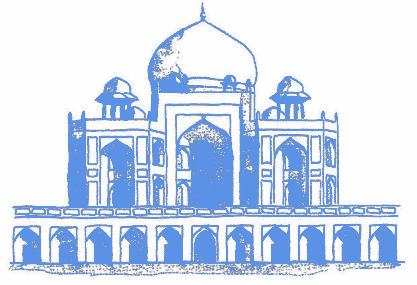

Humayun's
tomb
is the tomb of
the Mughal
Emperor Humayun in
Delhi, India.The tomb was declared a UNESCO World
Heritage Site in
1993,
and
since then has undergone extensive restoration work,
which is
complete.
Besides the main tomb enclosure of Humayun,
several smaller
monuments dot the pathway leading up to it, from
the main entrance in the West, including one that even pre-dates the
main tomb itself, by twenty years; it is the tomb complex of Isa
Khan Niyazi,
an Afghan noble
in Sher
Shah Suri's
court of the Suri
dynasty,
who fought against the Mughals, constructed in 1547 CE.